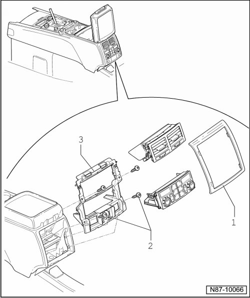

Rear A/C Display Control Head, Climatronic
Rear A/C Display Control Head, Climatronic
Removing
Special tools, testers and auxiliary items required
• Pry Lever (T10039/1)

1 Trim panel
• removing
- Pry of trim starting at bottom with Pry Lever (T10039/1).
2 Screws
• Qty. 4, 5 Nm
3 Frames
• removing
- Remove the screws - 2 - and then carefully remove the frames with vents and the Rear A/C Display Control Head (Climatronic) (E265).
- Loosen connector from Rear A/C Control Head (Climatronic) (E265).